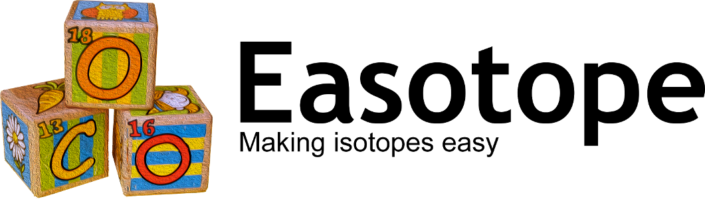

 |
This documentation is for Easotope release 20201231. It contains all the information necessary to install, configure, and run an Easotope server.
The top level directory for the Easotope server distribution is named easotope_server and it contains the following items:
| docs | Holds documentation such as this file and license information. |
| logs | Holds log files created by the server while it is running. Inside this directory, files with names beginning with log_ are created by Easotope directly and files with names starting with orm_log_ are created by the database libraries |
| repository | Created by the Eclipse infrastructure and should be ignored. |
| win32.win32.x86 linux.gtk.x86_64 |
Holds the compiled libraries and the executable. |
| args.properties | Configuration file for the server. This is the only file you should need to edit. |
| logs.zip | Created by the Eclipse infrastructure and should be ignored. |
| README.txt | Points to the server documentation. |
| topdir.txt | A marker that Easotope uses to find the top level directory of the distribution tree. |
All configuration information is saved in the file args.properties and this is the only file you should need to edit. This file is a Java properties file which is a normal text file that can be edited with any text editor. Note that Java properties files use a # to indicate that the rest of the line is a comment. So you will need to remove the # at the beginning any lines that you configure. Also note that Windows directory paths must contain double backslashes as in this example: C:\\Users\\admin\\Desktop\\easotope_database
There are two parameters that are required to be set before running a server:
| dbdir | The full path to the directory where the database will be created. The specified directory should already exist and be empty before running the server. |
| port | The TCP socket that the server will listen to for incoming client connections. Socket number 55000 is often used for Easotope servers but there is no specific reason for this. You can choose whatever your firewalls allow. |
In addition to these, there are a few other optional parameters that you may set to enable additional functionality on the server:
| backupdir | The full path to the directory where the database backups are stored. As backups are made, zip files will be added to this directory. The specified directory should already exist and be empty before running the server. |
| backuptimes | This parameter is required if the backupdir parameter is set. It is a comma separated list of times of the day (in the local time zone and 24-hour time format) when backups should be made. For example, setting this value to 0200,1400 will cause backups to be made at 2 o'clock in the morning and 2 o'clock in the afternoon every day. Backups during working hours should be avoided, however, because the server will not answer client requests while making backups. |
| maxbackups | This is the number of backup zip files that should be left in backupdir before old backups are removed. It is highly recommended that this value be set to avoid running out of disk space. |
| debug | If set to true, this will enable verbose logging. |
| reparseAcquisitions | If set to true, the server will reparse all acquisition files whenever it starts. This could take a very long time, so this option should not normally be used. It is only useful in very rare cases. |
After the args.properties file has been configured and the dbdir and (optionally) backupdir directories have been created, you can start the server by running the executable. On Windows this can be found in:
win32.win32.x86\eclipse\easotope.exe
And on Linux in:
linux.gtk.x86_64/eclipse/easotope
After running the executable, there will be no graphical indication that a server is running. No window appears on the screen and it may appear as if nothing happened. This is because the server runs as an invisible background process. There are three ways to verify that the server is running:
(Note that if you are trying to connect to a server with a client running on the same machine, you can use the hostname "localhost" which is an internet standard alias meaning "this computer".)
Once you have things running, you will probably want to configure your operating system to automatically start a server on reboot.
IMPORTANT: Before upgrading a server ALWAYS make a backup copy of your database folder so that you can revert to it if there are problems. It is also wise to keep this backup for a few days in case there are problems that are not immediately obvious.
Upgrading a previously installed server to a new version of Easotope is very easy. Simply stop the old server, copy the args.properties file from the old server to the new, and start the new server.
The first time a new version of a server is run, the server will make any necessary modifications to the database. If the modifications are significant, it might also decide to rebuild some of the dynamic database tables. This whole process can last from a few seconds to many minutes. During this time period, the server will allow clients to connect but it will not process any requests from them until the tables are rebuilt. If this process fails for some reason, you can find more information about the failure in the server's log file.